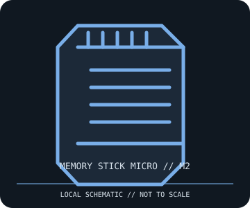

[ REMOVABLE MEDIA // INDIVIDUAL RECORD ]
Sony Memory Stick Micro (M2) 2 GB Card
Sony Memory Stick Micro 2 GB removable flash medium, branded M2. This record covers the card only; its adapter and reader are separate devices.

IDENTIFICATION: Confirm the M2 mark, full model code, capacity, and packaging. M2 is a separate small-form-factor Memory Stick family, not Memory Stick PRO Duo in a smaller shell.
Format and compatibility
| Catalog subcategory | Flash drives and memory cards |
|---|---|
| Catalog identity | Sony Memory Stick Micro (M2) 2 GB; removable medium only |
| Format / capacity | Proprietary Memory Stick Micro form factor; 2 GB nominal capacity, at the upper end of the original M2 capacity generation. |
| Interface / compatibility | Requires an M2-compatible slot or a correctly keyed Sony M2-to-Memory Stick PRO Duo adapter in a PRO Duo host. An adapter changes physical fit only; it does not add M2 support to every device. |
| Host caveat | Check the exact phone, camera, reader, firmware, filesystem, and supported capacity. M2, Memory Stick PRO Duo, Memory Stick Micro Mark 2, and Memory Stick XC are distinct generations. |
Media care and preservation
Keep the card in its case, protect the tiny contacts from oils, dust, moisture, and static, and avoid bending or forcing it into an adapter. Copy data promptly, verify files and checksums, and retain multiple copies on current independent storage; a small legacy card should not be the only archive copy.
- Photograph the label and adapter before use; preserve original packaging and model markings.
- Do not remove the card or adapter during a write. Use safe removal where the device buffers data.
Model and version caveats
Capacity alone does not establish host compatibility. M2 cards appeared in multiple capacities and model revisions; some products marketed as M2 Mark 2 have different behavior. Use the host manufacturer’s compatibility list and the card’s exact label rather than relying on a shared brand or adapter fit.
Sources & further reading
- Sony — Memory Stick media supportManufacturer format and support archive; search the exact M2 model code for specifications and handling notes.
- Sony — Memory Stick format informationManufacturer overview of Memory Stick generations and device compatibility.
Manufacturer documentation for the exact card and host model takes precedence over family-level format summaries.